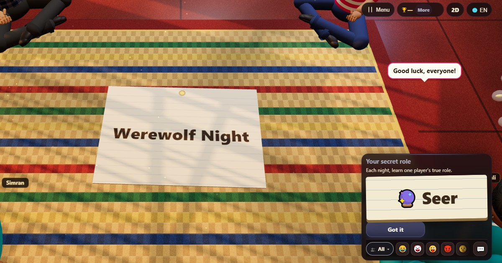

Мафия (Оборотни) (Werewolf Night)
- 👥 5–10 игроков
- Игры для компании
- 🆓
Гайд на русском
Тайные роли, тихие ночи и шумные утра. Найди оборотней.
English name: Werewolf Night

Как играть
- Каждый тайно читает свою роль: Оборотень, Провидица, Доктор или Житель.
- Ночь: оборотни выбирают, кого поймать, Провидица выбирает игрока, чью роль узнает, а Доктор выбирает, кого защитить.
- Утро: деревня узнаёт, кого поймали ночью, если только Доктор его не защитил.
- День: обсудите всё в чате, затем все оставшиеся голосуют за того, кого считают оборотнем. Набравший больше всех голосов выбывает, и его роль раскрывается. При равенстве никто не выбывает.
- Снова наступает ночь, и игра продолжается, пока не победит одна из сторон.
Очки
Побеждает вся команда: оборотни вместе или Провидица, Доктор и Жители вместе. При девяти игроках и больше оборотней двое.
Кто побеждает
Деревня побеждает, как только все оборотни изгнаны голосованием. Оборотни побеждают, когда их становится столько же, сколько остальных.
Частые вопросы
Сколько нужно игроков?
Минимум пять. Свободные места занимает компьютер, так что можно играть одному, с друзьями на одном телефоне, рядом или онлайн.
Кто-нибудь по-настоящему пострадает?
Нет. Если тебя поймали, ты просто смотришь остаток игры.
Может ли Доктор защитить себя?
Да, любого игрока, кто ещё в игре, включая себя.
Как играть
- Как гость: Без регистрации и входа. Выбери имя и играй сразу.
- С компьютером: Если никого нет, свободные места займут компьютерные игроки. Легко, нормально или сложно.
- Онлайн: Садись за открытый стол с игроками со всего мира.
- С друзьями рядом: Открой игру на одном телефоне и поделись кодом или QR-кодом. Друзья подключаются со своих телефонов.
- На одном телефоне: Передавайте телефон по кругу: одного устройства хватит всей семье.
Другие языки
- हिन्दी: वेयरवुल्फ़ नाइट
- Hinglish: Werewolf Night
- Español: Hombres lobo
- Português: Lobisomem
- Français: Loup-garou
- Deutsch: Werwolf
- Bahasa Indonesia: Manusia Serigala
- Türkçe: Kurt Adam
- Italiano: Lupus (lupo mannaro)
- 日本語: 人狼
- 한국어: 늑대인간
- 中文: 狼人杀
- اردو: ویئر وولف
- नेपाली: वेयरवुल्फ
- বাংলা: ওয়্যারউলফ
- English: Werewolf Night · Полные правила (англ.)
Идеи игр
Все игры
 Найди шпиона
Найди шпиона Правда или действие
Правда или действие Загадки на бумажках
Загадки на бумажках Мнение большинства
Мнение большинства Чепуха
Чепуха Летающая записка
Летающая записка Гонка в тоннеле
Гонка в тоннеле Турбо-тоннель
Турбо-тоннель
В ChitPlay нет настоящих денег, ставок и призов. Очки ничего не стоят.